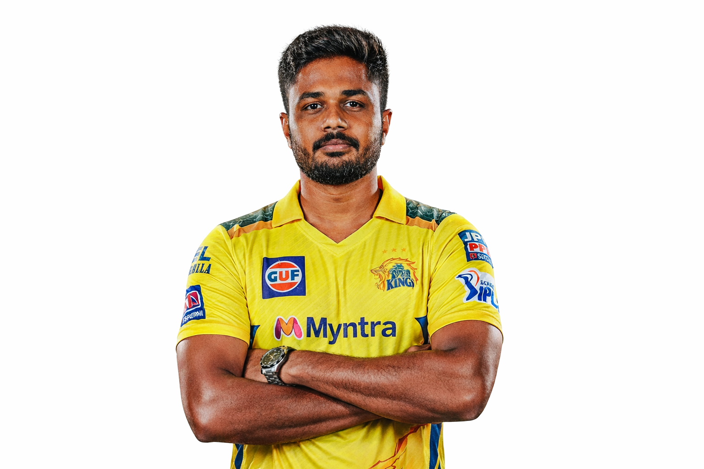
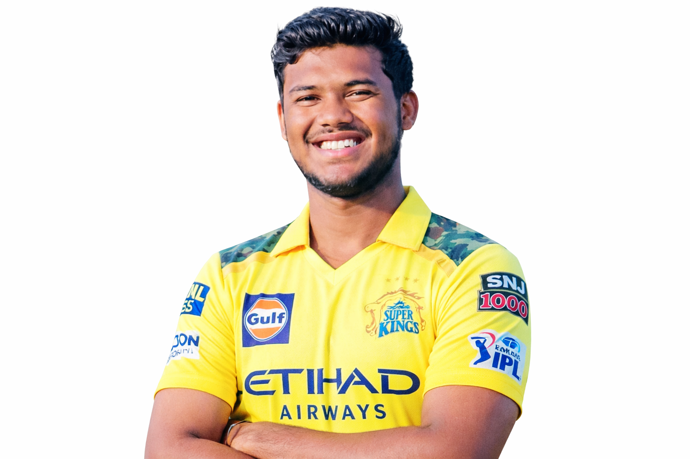
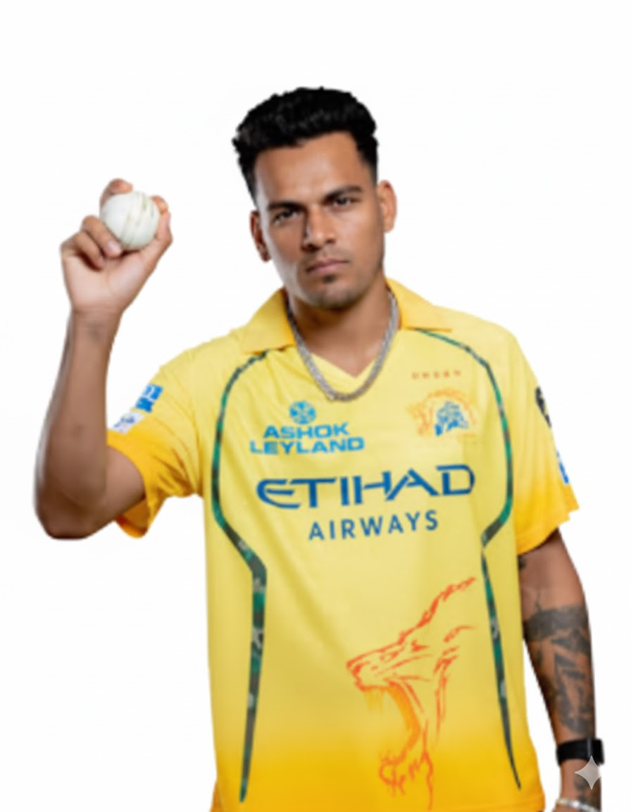

CSK Key Players

Ruturaj Gaikwad (Captain)
Role: Opening Batter
Lead Captain of the franchise; CSK's all-time top run-scorer among active players with over 2,500 IPL runs and 2 centuries.

MS Dhoni
Role: Wicketkeeper Batter / Finisher
Legendary 5× IPL Winning Captain. Confirmed to play the full 2026 season at age 44 and remains the tactical heartbeat of the team.

Sanju Samson
Role: Wicketkeeper Batter
Arrived in a blockbuster 2026 trade from RR. T20 World Cup 2026 Player of the Tournament.
Shivam Dube
Role: Batting All-Rounder
India's premier spin-hitter and a key performer in India's 2026 T20 World Cup victory.

Prashant Veer
Role: Spin All-Rounder
Made history in the 2026 auction as the joint-most expensive uncapped player (₹14.2 Crore).

Kartik Sharma
Role: Wicketkeeper Batter
₹14.2 Crore uncapped signing known for his huge domestic T20 strike rate of 162.92.
Noor Ahmad
Role: Left-Arm Wrist Spinner
CSK's primary overseas spinner with nearly 50 IPL wickets by age 21.
Khaleel Ahmed
Role: Fast Bowler
India's leading left-arm pacer in the squad with 89 IPL wickets.

Rahul Chahar
Role: Leg Spinner
Major 2026 auction signing brought to control the middle overs.
Dewald Brevis
Role: Top-Order Batter
Known as "Baby AB", famous for explosive power hitting.

Mukesh Choudhary
Role: Left-Arm Medium-Fast
Powerplay swing specialist and Chepauk fan favourite.